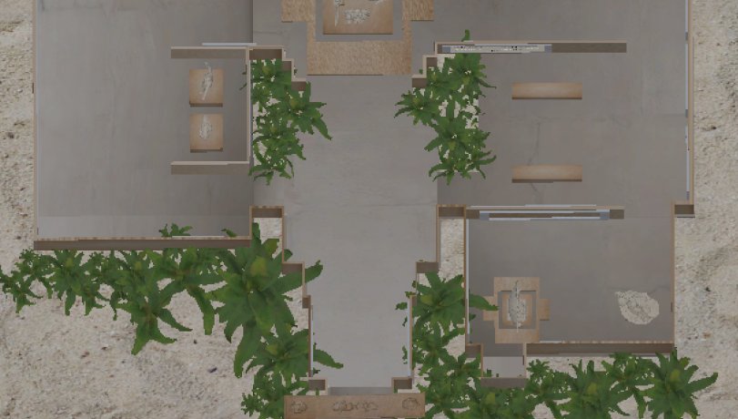

a multimedia experience designer who loves to notice things that often go unnoticed.
Selected projects


Walk through a town the sea took back: a multisensory VR experience that rebuilds Dhanushkodi from memory, place and the aftermath of the 1964 cyclone, where gesture-based interactions surface fragments of what was lost.
View Project →

Turn practice into play: a card game for speech therapy built around sound, repetition and visual feedback, where practised sounds are paired with characters and small rewards.
View Project →

Feel the air before you read it: a data visualisation of air quality and bird populations across Ahmedabad, where flocks on screen thin and scatter as AQI readings climb.
View Project →

Build the puppet, then watch the story begin: a DIY puppet theatre kit that brings Indian folk stories to children through making, performing and AR.
View Project →

Let the stone tell its own story: an interactive museum experience on the culture and tradition of Tamil Nadu, where carved details unfold into sound, story and animation.
View Project →

Hold a feeling in your hands: a board game on emotional recognition through expressions, colour and the nine Navarasas, designed for autistic kids to sort, match and talk about.
View Project →Scroll to open the folder. Click it for more.